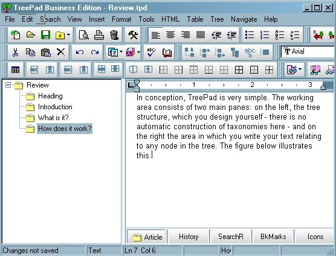

In conception, TreePad is very simple. The working area consists of two main panes: on the left, the tree structure, which you design yourself - there is no automatic construction of taxonomies here - and on the right the area in which you write the text relating to the nodes in the tree. The figure below illustrates this.

The editing buttons above the main work area are much more comprehensive in scope than in the original version, and many of them will be recognizable to anyone familiar with Windows software, but in the centre row there are some TreePad-specific buttons for managing the tree - just to the right of the open book, the thesaurus button.
You proceed by defining your database in the root node (here it is called 'Review') and then naming appropriately the 'children' of that 'parent' node. I have chosen to use as child nodes, the successive sections of the review. A child node, of course, can be a parent node and so on, ad infinitum. As long as what you need to organize can be structured in this way, the process is quite straightforward. You can import images, as I have done here, you can point to Web sources, and you can import any kind of text you wish. You can also insert the date, or date and time: Thu Feb-17-2005 20:44, a calendar for the day, week, month or year, or a to-do list. At any point in the production of a database you can also insert a table of contents at the root node (or anywhere else) which is hyperlinked to the appropriate node.
Simple. But, of course, the tree structure can be as complex as serves your needs. For example, here is the structure of part of the TreePad manual, which, of course, comes as a TreePad database:

You will see that 'Font' is seven levels down from 'Export and Import', and it is actually nine levels down from the root node. The figure also illustrates the flexibility of the 'export' function.
The 'article' in the right pane can be either a simple 'text' file, or a 'rich text format' file. The former results in smaller files, the latter gives the flexibility of changing type styles, using colour, etc. And producing an article is as straightforward as using a word-processor, most of the Word keyboard shortcuts function, for example, Ctrl+I to start and finish italic, and Ctrl+B for bold.